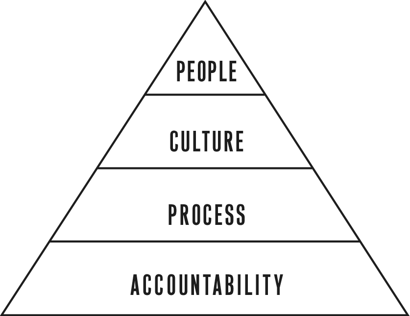

Let’s say you are out for a drive, pondering the merits of small batches, and find yourself accidentally putting a dent in your new 2011 blue Toyota Camry. You take it into the dealership for repair and wait to hear the bad news. The repair technician tells you that you need to have the bumper replaced. He goes to check their inventory levels and tells you he has a new bumper in stock and they can complete your repair immediately. This is good news for everyone—you because you get your car back sooner and the dealership because they have a happy customer and don’t run the risk of your taking the car somewhere else for repair. Also, they don’t have to store your car or give you a loaner while they wait for the part to come in.
In traditional mass production, the way to avoid stockouts—not having the product the customer wants—is to keep a large inventory of spares just in case. It may be that the blue 2011 Camry bumper is quite popular, but what about last year’s model or the model from five years ago? The more inventory you keep, the greater the likelihood you will have the right product in stock for every customer. But large inventories are expensive because they have to be transported, stored, and tracked. What if the 2011 bumper turns out to have a defect? All the spares in all the warehouses instantly become waste.
Lean production solves the problem of stockouts with a technique called pull. When you bring a car into the dealership for repair, one blue 2011 Camry bumper gets used. This creates a “hole” in the dealer’s inventory, which automatically causes a signal to be sent to a local restocking facility called the Toyota Parts Distribution Center (PDC). The PDC sends the dealer a new bumper, which creates another hole in inventory. This sends a similar signal to a regional warehouse called the Toyota Parts Redistribution Center (PRC), where all parts suppliers ship their products. That warehouse signals the factory where the bumpers are made to produce one more bumper, which is manufactured and shipped to the PRC.
The ideal goal is to achieve small batches all the way down to single-piece flow along the entire supply chain. Each step in the line pulls the parts it needs from the previous step. This is the famous Toyota just-in-time production method.8
When companies switch to this kind of production, their warehouses immediately shrink, as the amount of just-in-case inventory [called work-in-progress (WIP) inventory] is reduced dramatically. This almost magical shrinkage of WIP is where lean manufacturing gets its name. It’s as if the whole supply chain suddenly went on a diet.
Startups struggle to see their work-in-progress inventory. When factories have excess WIP, it literally piles up on the factory floor. Because most startup work is intangible, it’s not nearly as visible. For example, all the work that goes into designing the minimum viable product is—until the moment that product is shipped—just WIP inventory. Incomplete designs, not-yet-validated assumptions, and most business plans are WIP. Almost every Lean Startup technique we’ve discussed so far works its magic in two ways: by converting push methods to pull and reducing batch size. Both have the net effect of reducing WIP.
In manufacturing, pull is used primarily to make sure production processes are tuned to levels of customer demand. Without this, factories can wind up making much more—or much less—of a product than customers really want. However, applying this approach to developing new products is not straightforward. Some people misunderstand the Lean Startup model as simply applying pull to customer wants. This assumes that customers could tell us what products to build and that this would act as the pull signal to product development to make them.9
As was mentioned earlier, this is not the way the Lean Startup model works, because customers often don’t know what they want. Our goal in building products is to be able to run experiments that will help us learn how to build a sustainable business. Thus, the right way to think about the product development process in a Lean Startup is that it is responding to pull requests in the form of experiments that need to be run.
As soon as we formulate a hypothesis that we want to test, the product development team should be engineered to design and run this experiment as quickly as possible, using the smallest batch size that will get the job done. Remember that although we write the feedback loop as Build-Measure-Learn because the activities happen in that order, our planning really works in the reverse order: we figure out what we need to learn and then work backwards to see what product will work as an experiment to get that learning. Thus, it is not the customer, but rather our hypothesis about the customer, that pulls work from product development and other functions. Any other work is waste.
To see this in action, let’s take a look at Berkeley-based startup Alphabet Energy. Any machine or process that generates power, whether it is a motor in a factory or a coal-burning power plant, generates heat as a by-product. Alphabet Energy has developed a product that can generate electricity from this waste heat, using a new kind of material called a thermoelectric. Alphabet Energy’s thermoelectric material was developed over ten years by scientists at the Lawrence Berkeley National Laboratories.
As with many clean technology products, there are huge challenges in bringing a product like this to market. While working through its leap-of-faith assumptions, Alphabet figured out early that developing a solution for waste thermoelectricity required building a heat exchanger and a generic device to transfer heat from one medium to another as well as doing project-specific engineering. For instance, if Alphabet wanted to build a solution for a utility such as Pacific Gas and Electric, the heat exchanger would have to be configured, shaped, and installed to capture the heat from a power plant’s exhaust system.
What makes Alphabet Energy unique is that the company made a savvy decision early on in the research process. Instead of using relatively rare elements as materials, they decided to base their research on silicon wafers, the same physical substance that computer central processing units (CPUs) are made from. As CEO Matthew Scullin explains, “Our thermoelectric is the only one that can use low-cost semiconductor infrastructure for manufacturing.” This has enabled Alphabet Energy to design and build its products in small batches.
By contrast, most successful clean technology startups have had to make substantial early investments. The solar panel provider SunPower had to build in factories to manufacture its panels and partner with installers before becoming fully operational. Similarly, BrightSource raised $291 million to build and operate large-scale solar plants without delivering a watt to a single customer.
Instead of having to invest time and money in expensive fabrication facilities, Alphabet is able to take advantage of the massive existing infrastructure that produces silicon wafers for computer electronics. As a result, Alphabet can go from a product concept to holding a physical version in its hand in just six weeks from end to end. Alphabet’s challenge has been to find the combination of performance, price, and physical shape that is a match for early customers. Although its technology has revolutionary potential, early adopters will deploy it only if they can see a clear return on investment.
It might seem that the most obvious market for Alphabet’s technology would be power plants, and indeed, that was the team’s initial hypothesis. Alphabet hypothesized that simple cycle gas turbines would be an ideal application; these turbines, which are similar to jet engines strapped to the ground, are used by power generators to provide energy for peak demand. Alphabet believed that attaching its semiconductors to those turbines would be simple and cheap.
The company went about testing this hypothesis in small batches by building small-scale solutions for its customers as a way of learning. As with many initial ideas, their hypothesis was disproved quickly. Power companies have a low tolerance for risk, making them unlikely to become early adopters. Because it wasn’t weighed down by a large-batch approach, Alphabet was ready to pivot after just three months of investigation.
Alphabet has eliminated many other potential markets as well, leading to a series of customer segment pivots. The company’s current efforts are focused on manufacturing firms, which have the ability to experiment with new technologies in separate parts of their factory; this allows early adopters to evaluate the real-world benefits before committing to a larger deployment. These early deployments are putting more of Alphabet’s assumptions to the test. Unlike in the computer hardware business, customers are not willing to pay top dollar for maximum performance. This has required significant changes in Alphabet’s product, configuring it to achieve the lowest cost per watt possible.
All this experimentation has cost the company a tiny fraction of what other energy startups have consumed. To date, Alphabet has raised approximately $1 million. Only time will tell if they will prevail, but thanks to the power of small batches, they will be able to discover the truth much faster.10
The Toyota Production System is probably the most advanced system of management in the world, but even more impressive is the fact that Toyota has built the most advanced learning organization in history. It has demonstrated an ability to unleash the creativity of its employees, achieve consistent growth, and produce innovative new products relentlessly over the course of nearly a century.11
This is the kind of long-term success to which entrepreneurs should aspire. Although lean production techniques are powerful, they are only a manifestation of a high-functioning organization that is committed to achieving maximum performance by employing the right measures of progress over the long term. Process is only the foundation upon which a great company culture can develop. But without this foundation, efforts to encourage learning, creativity, and innovation will fall flat—as many disillusioned directors of HR can attest.
The Lean Startup works only if we are able to build an organization as adaptable and fast as the challenges it faces. This requires tackling the human challenges inherent in this new way of working; that is the subject of the remainder of Part Three.
THE STARTUP WAY
